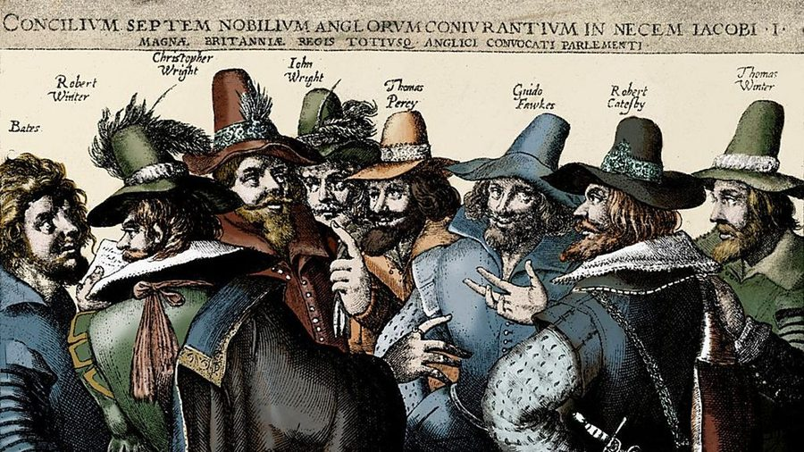
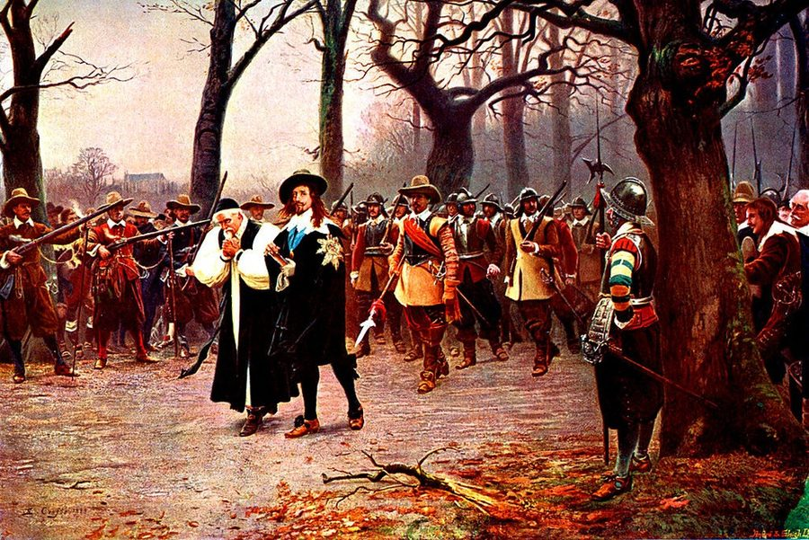

Speaker
“I’d always thought of foxes as countryside animals, so I nearly dropped my coffee when one strolled past me on Oxford Street at eight in the morning. Nobody else even looked up.”
The thread: nature words → the same words in five written opinions (the lynx) → matching those opinions to statements on paper (Practice 4) → the same task heard once (Block B) → back to history: who came after the Tudors, and who was writing plays then.
No timeline this time. Retell the story aloud in one or two minutes, monarch by monarch: Henry VII → Henry VIII → Edward VI → Mary I → Elizabeth I. Tap each word when you use it, and say at least two passives (the monasteries were closed).
0 / 5 used
In 1485 Henry Tudor won at Bosworth and became Henry VII. He married Elizabeth of York, so the two roses became one. He was careful with money, and by the time he died in 1509, the treasury had been filled. In 1492 Columbus reached America, and five years later John Cabot landed in North America for Henry VII. Henry VIII wanted a son, and when the Pope refused to end his first marriage, he broke with Rome: in 1534 he became Head of the Church of England. The monasteries were closed, and two of his six wives were beheaded. Edward VI became king at nine and died six years later. Mary I brought back the Catholic Church, and almost three hundred Protestants were burnt. In 1558 Elizabeth I came to the throne. Her reign was a golden age: Shakespeare, Drake. In 1588 the Armada was sent to invade England, but it was defeated by English ships and storms. She never married, so in 1603 the Tudor line came to an end.
Listen for: the five monarchs in order · was / were + V3 · by the time … had been · the Pope, the Church of England · 1603 = the 17th century.
Read the Russian and type the English word or phrase. The first letter and the number of letters are shown. Press Check. Then say a passive sentence of your own with every word you missed (The experiment was carried out in 1928.).
Go through the cards: say the word, guess the translation, then flip. Mark each card ✓ or ✗.
Read through the list and listen to any word you’re unsure of. Then press 🙈 Hide Russian and test yourself: tap a blurred translation to check.
All three options have the same form, so here only the meaning decides.
In Задание 2 the little word after the gap often decides the answer. Type one word.
The Eurasian lynx, a wild cat about the size of a big dog, died out in Britain more than a thousand years ago. Some people want to bring it back. Five people give their opinion. Label the box first (noun, verb, adjective, -ed?), then fill the gaps.
Drag a word into a gap, or tap a word and then the gap. Tap a filled gap to empty it.
People in cities love the idea, but they don’t have to live with it. A lynx is a 1, and on my farm the easiest prey would be my lambs, not the deer in the forest. My family has kept sheep on these hills for four generations, and our income is already vulnerable: one hard winter or a long 2, and we struggle. They say farmers will get money for every lamb that is killed, but nobody can tell me how I’d prove it was a lynx. I’m not against wildlife. I just think the people who make the decision should come and spend a lambing season here first.
Britain has lost more of its wildlife than almost any other country in Europe. Deer numbers are completely out of control, because we got rid of every animal that used to hunt them. The deer eat the young trees, so whole forests can’t grow back. A lynx doesn’t chase sheep across open fields: it hunts deer in thick forest, which is its natural 3. In other European countries lynx were brought back decades ago, and the whole 4 there has become healthier. Of course a few sheep will be lost, but the numbers are tiny.
Honestly, I’d just love to see one. I’ve grown up hearing that wolves, bears and lynx used to live here, and that we killed them all. It makes me sad that animals like that 5 because of us. At school we’re always told to recycle and cut our emissions, which is fine, but bringing a 6 back feels like actually doing something, not just using less. Even if I never saw a lynx myself, I’d like to know it was out there.
Our village is in a beautiful area, but most tourists just drive straight through it. In places like Spain and Switzerland, people pay to go on lynx tours, even though they hardly ever see one. That could change everything for us: more visitors, more jobs, and more young people staying instead of moving to the city. But it has to be done in a 7 way. If coaches full of tourists start driving into the forest, they’ll 8 the very animals they’ve come to see.
I’ve worked in these forests for thirty years, and I’m not sure the lynx would cope. This isn’t the landscape it left: most of the old forests have been cut down, and what’s left are small patches of trees with roads and farms in between. A lynx needs a huge territory. If we release a few animals and they can’t 9, they’ll end up hit by cars or shot. I’d rather we spent the money on the 10 of the animals we’ve still got, like the red squirrel and the wildcat, before they disappear too.
🎧 Now listen to all five and read along. Notice how the speakers sound: Ruth is annoyed, Josh is excited, Graham is worried.
Read the five opinions again and match each speaker to a statement. The statements say the same thing in other words: that is exactly what happens in Задание 7. Two statements are extra.
Say which speaker you agree with most and why. Then answer one of the others: Ruth says …, but I think … Tap each word or phrase when you use it.
0 / 5 used
“I’d always thought of foxes as countryside animals, so I nearly dropped my coffee when one strolled past me on Oxford Street at eight in the morning. Nobody else even looked up.”
Answer, then press Check. The routine opens after you check.
| When | What you do |
|---|---|
| Before · 1 min | Read all seven statements. Tap-underline what happened + why in each one. Notice what they all share (in the demo: a misunderstanding): the shared part never decides. |
| While | Write 2–3 words per speaker, no more. Expect paraphrase, not the same words. A word from the recording inside a statement is often a trap. Missed something? Never stop: the next speaker is already talking. |
| After | Fill in the certain ones first. The two left over are the extras. Never leave an answer empty. |
| I couldn’t believe my eyes · it was the last thing I expected | was surprised |
| I had no choice · I had to | was forced to / had no choice |
| It turned out (that)… · In the end… | discovered / finally |
| I wish I’d… · If only I’d… | regrets something |
| I’m not saying…, but… · …, I admit, but… | mixed feelings / partly agrees |
| I nearly / almost did X | did not do X |
| Everybody else got X | the speaker did not get X |
These are the phrases that carry the answer in Задание 7. Choose the meaning.
Ниже представлено семь утверждений. Прослушайте пять аудиотекстов и соотнесите утверждения с информацией, представленной в них. Два утверждения являются лишними. Прослушайте текст 1 раз.
Tap a word to underline it: what happened + why.
Speaker 1 → B. Everyone told me that if I went to the island of Mull, off the west coast of Scotland, I’d see sea eagles. We booked a boat trip, and the guide said they’d been seen every single day that week. Well, not that day. We sat on that boat for three hours in the rain, staring at the sky. On the way back my phone died, so I went downstairs to charge it. Ten minutes later everyone started shouting. By the time I’d run back up, the eagle had caught a fish and flown off. Everybody else got amazing photos. I got a very nice photo of a seagull.
Speaker 2 → E. When I was about ten, a huge spider appeared in our bathroom, and I refused to go in there for two days. Years later, at university, I did a project on spiders, and it completely changed the way I see them. Most species in Britain can’t even bite through human skin, and the big ones in your bath are actually more scared of you than you are of them. They’re useful, too: they eat flies and mosquitoes. So now, when I find one in the house, I don’t scream. I just put a glass over it and carry it out into the garden.
Speaker 3 → F. Last summer I went kayaking off the coast of Cornwall with my dad. We’d been told there were seals in the area, but I thought we’d only see them from a distance, lying on the rocks. Then suddenly something bumped the back of my kayak. I turned round, and there was a young seal right next to me, looking up at me with these huge dark eyes. It was close enough to touch, although of course you’re not supposed to. It followed us for about five minutes and then just disappeared under the water. My dad didn’t even manage to take a photo.
Speaker 4 → D. It was a really foggy morning, and I was cycling to school along a country road when I saw something lying in the middle of it. At first I thought it was a bag, but it was an owl. It must have been hit by a car, because one of its wings was hanging down and it couldn’t fly. I wrapped it in my jacket, which it didn’t like at all, and carried it to a vet in the next village. I was an hour late for school, but my teacher didn’t mind when she heard why. A few weeks later the vet phoned to say the owl had been released back into the wild.
Speaker 5 → G. For months, things kept disappearing from our garden: a glove, a shoe, one of my dad’s socks from the washing line. We blamed the neighbours’ dog. Then my mum put a wildlife camera on the fence, just to see. On the very first night, a fox came out from under our shed, picked up one of my trainers and carried it back underneath. It turned out a whole family of foxes had been living there since the spring, right under our noses. We never got the trainer back, but I’ve never been so happy to lose a shoe.
Ниже представлено семь утверждений. Прослушайте пять аудиотекстов и соотнесите утверждения с информацией, представленной в них. Два утверждения являются лишними. Прослушайте текст 1 раз.
Tap a word to underline it: what happened + why.
Speaker 1 → C. I’d love to say I stopped buying new clothes to save the planet, but honestly, it started because I was broke. I’d spent all my birthday money in one weekend, so for the rest of the year I had to buy everything second-hand. What surprised me was how much I enjoyed it. Charity shops are like a treasure hunt, and nobody at school has the same jacket as me. Only later did I read how much water it takes to make one pair of jeans, and that made me feel even better about it. So now I tell people I do it for the environment, which is half true.
Speaker 2 → G. Last January my whole family decided to go vegetarian for a month. My sister found loads of recipes, and the first two weeks were great: lentil curry, mushroom burgers, all sorts. But my dad really struggled. By week three he was just popping out to the shop every evening and coming back smelling of chips. When the month was over, we all went back to eating meat, although we do still have two meat-free days a week. So it didn’t last, but it wasn’t a complete failure either.
Speaker 3 → F. At our school, the canteen used to give out plastic forks and spoons with every lunch: hundreds a day, used once and thrown away. I counted them for a week for a science project, and the number was shocking. I took my results to the head teacher, and at first she said no: metal ones would be too expensive, and they’d get stolen. So I started a petition, and more than four hundred students signed it. In the end, the school agreed. Now we have proper metal cutlery, and I don’t think a single fork has been stolen.
Speaker 4 → E. I live in a small town, and I always thought cycling to my college, which is about eight kilometres away, would be impossible: too far, too many hills, and it rains all the time. So my mum drove me every day. Then this year she started a new job and couldn’t take me any more, so I had no choice. The first week was hard, I won’t lie. But after a month I was getting there faster than by car, because I don’t get stuck in traffic, and I’ve got much fitter. Now I’d actually feel strange going by car.
Speaker 5 → B. I do all the usual things: I recycle, I turn the lights off, I take a reusable bottle to school. But sometimes I wonder what the point is. I read that just a hundred companies produce most of the world’s emissions. So when someone tells me off for using a plastic straw, I think, really? Is my straw the problem? Don’t get me wrong, I’ll keep doing my bit, because if everyone gave up, things would be even worse. But the big changes have to come from governments and companies, not from teenagers with metal straws.
Ниже представлено семь утверждений. Прослушайте пять аудиотекстов и соотнесите утверждения с информацией, представленной в них. Два утверждения являются лишними. Прослушайте текст 1 раз.
Tap a word to underline it: what happened + why.
Speaker 1 → C. It had been raining for four days without stopping, and the river at the end of our street was getting higher and higher. On the fifth night, at about two in the morning, a policeman knocked on our door and told us we had to go, right then. We grabbed the cat and a few bags and spent the night in the school sports hall with about fifty other families. When we came back three days later, the water had come halfway up the kitchen walls. It took months to get the house dry again. Now, whenever it rains for more than a day, my mum checks the river every hour.
Speaker 2 → G. In the summer of 2022 we had the hottest weather I’ve ever known in England: it was nearly forty degrees. My grandad has an allotment where he grows vegetables, and I’d promised to look after it while he was in hospital. There was a ban on using hosepipes, so I had to carry water from the tap in cans, twice a day. It wasn’t enough. One by one, the beans and the lettuces dried up and died. The only things that survived were the tomatoes, which loved the heat. Grandad said it wasn’t my fault, but I still felt terrible.
Speaker 3 → F. When the Beast from the East hit in 2018, the whole country basically stopped. Trains were cancelled, the shops ran out of bread, and my parents couldn’t get to work. For me, though, it was the best week of my life. School was closed for four days, and there was so much snow that we built an igloo in the park big enough for six people to sit in. I know some people were stuck in their cars for hours, which must have been awful, but I was eleven, and all I cared about was sledging.
Speaker 4 → D. During Storm Arwen, the wind brought down power lines all over the north-east, and our village had no electricity for six days. No heating, no lights, no internet, and my phone died on the second day. At first I was bored out of my mind. But by the third evening we were all sitting round the fire playing cards and telling stories, which my family had never done before. I’m not saying I’d want to do it again, especially in November, but it made me see how much time I normally spend staring at a screen.
Speaker 5 → A. We were walking in the Lake District, and the forecast had said there might be thunderstorms in the afternoon. My friend wanted to turn back, but I said we’d be at the top by midday and down long before anything happened. I was wrong. Half an hour from the top, the sky went black, and suddenly there was lightning hitting the hills all around us. We ran down, soaking wet, and hid under a rock until it passed. Nobody was hurt, luckily, but I’ve never been so scared. These days I check the forecast twice, and if it says storms, I stay in the valley.
King of Scotland as James VI; King of England 1603–1625.
Tsar of Russia 1613–1645, after the Time of Troubles.
Ten years apart, both countries got a new royal family. Is each fact about James, Michael, or both?
In both countries the old line had died out: Elizabeth I had no children, and in Russia Feodor I, the last tsar of Rurik’s line, died childless in 1598, which led to the Time of Troubles. In 1613 the Zemsky Sobor chose sixteen-year-old Michael Romanov. The Stuarts ruled for 111 years (until 1714); the Romanovs for 304 (until 1917). And there is a link: in 1617 John Merrick, James I’s ambassador in Moscow, helped Russia and Sweden make peace at Stolbovo, and Novgorod was returned to Russia.
Соотнесите события, значимые для стран(ы) изучаемого языка, и века, в которых эти события происходили. Два века не соответствуют ни одному событию.
In Задание 9 the text never names the person. Read the clues, then answer. Spelling counts.
He was born in 1564 in a small market town on a river in the middle of England, the son of a glove-maker. At eighteen he married a woman eight years older than him. By the 1590s he was in London, acting and writing for the stage, and in 1599 his company built a new round theatre on the south bank of the Thames. He wrote about 37 plays and 154 sonnets. He died in 1616, three years after the first Romanov came to the throne in Moscow.
Read the statements first and underline the absolute words (first, same, more than). Then listen once without stopping, as in the Olympiad, and decide if each statement is True or False.
Now read the story. The time expressions are the links you need for Задание 5. Four dates are not written: count them from two years later, thirteen years later, the next eleven years and a year later. Then drag each event to its date (or tap the event, then the date).
When Elizabeth I died in 1603, her cousin James, who was already King of Scotland, became James I of England. For the first time, one king ruled both countries. Two years later, a group of Catholics tried to blow him up together with the whole Parliament. Guy Fawkes was caught in a cellar under the House of Lords, guarding thirty-six barrels of gunpowder. Every year on the fifth of November, the British still celebrate the failure of the Gunpowder Plot with bonfires and fireworks.
Meanwhile, the English were crossing the Atlantic. In 1607 Jamestown, in Virginia, became the first permanent English colony in America. Thirteen years later, the Pilgrims crossed the ocean on the Mayflower and founded Plymouth Colony, where they could practise their religion freely, and in 1636 the colonists founded Harvard, the first college in America.
James’s son, Charles I, believed that kings got their power from God, and he quarrelled with Parliament for years. In 1642 a civil war broke out. Parliament won, largely thanks to its best general, Oliver Cromwell, and in 1649 the king was put on trial and beheaded. For the next eleven years, England had no king.
Then the monarchy was restored, and Charles II came back from exile. His reign was hit by two disasters: the Great Plague of 1665 and, a year later, the Great Fire of London, which destroyed more than thirteen thousand houses. Across the ocean, William Penn founded Pennsylvania in 1681, and in 1692 twenty people were executed as witches in Salem.
In 1688 the Catholic James II was driven out, almost without a fight, in the Glorious Revolution, and his daughter Mary and her Dutch husband William took the throne. In 1707 the Act of Union joined England and Scotland into one kingdom, Great Britain. When Queen Anne died in 1714, the Stuart line came to an end.


Drag an event to a date, or tap an event and then tap the date. Tap a filled date to empty it.
Two minutes, out loud, from James I to Anne, with the colonies in the middle. Use at least two time links (meanwhile, two years later, for the next eleven years) and two passives (the king was beheaded, the monarchy was restored). Next lesson you’ll retell it without the timeline.
0 / 5 used
Ниже представлено семь утверждений. Прослушайте пять аудиотекстов и соотнесите утверждения с информацией, представленной в них. Два утверждения являются лишними. Прослушайте текст 1 раз.
Tap a word to underline it: what happened + why.
Speaker 1 → G. Every spring our school does a beach clean on the coast near Whitby. I’d done it twice before, so I thought I knew what to expect: crisp packets, bottles, the odd flip-flop. This year, though, we found a whole fishing net, about ten metres long, tangled in the rocks, with a dead seabird caught in it. It took six of us an hour to pull it out. Our teacher said nets like that are one of the biggest threats to sea life, because they keep catching animals for years. I’d always thought of litter as ugly. I’d never thought of it as dangerous.
Speaker 2 → D. Last November I spent three Saturdays planting trees with a local wildlife group. It was freezing and muddy, and by lunchtime I couldn’t feel my fingers. We planted about two thousand trees: oak, birch and hazel. Right now they’re just sticks with plastic tubes round them. The leader told us an oak doesn’t really become a proper tree for about fifty years, so I’ll be an old man by the time it looks like a forest. Strangely, I quite like that. It feels like a present for people who haven’t been born yet.
Speaker 3 → F. Every January I take part in the Big Garden Birdwatch. You just sit by the window for an hour, count the birds you see and send the numbers online. It sounds boring, but hundreds of thousands of people do it, so scientists get a picture of the whole country. That’s how they found out how much house sparrows have declined since the seventies. Last year I spotted a bird I didn’t recognise, so I sent in a photo, and it turned out to be quite a rare winter visitor from Scandinavia. Someone from the charity even emailed to thank me.
Speaker 4 → A. My aunt runs a hedgehog hospital in her garage, and in the summer holidays I helped her out. I imagined cute babies and cuddles. In reality, a lot of the hedgehogs that come in have been hurt by garden machines or poisoned, and not all of them make it. The first time one died, I cried for the whole evening. My aunt said it never gets easy, but you have to think about the ones you save. By the end of the summer we’d released fourteen back into the wild, and that kept me going.
Speaker 5 → C. I only joined the river group because my best friend begged me to. I thought it would be a bunch of old people talking about fish. Actually, once a month we test the water in our local river: we check the temperature and look for tiny insects that only live in clean water. Last spring the numbers suddenly dropped, and our data showed that the problem started near a new building site. The group reported it, and the builders were fined. My friend stopped coming after two months, by the way. I’m still there.
Ниже представлено семь утверждений. Прослушайте пять аудиотекстов и соотнесите утверждения с информацией, представленной в них. Два утверждения являются лишними. Прослушайте текст 1 раз.
Tap a word to underline it: what happened + why.
Speaker 1 → G. If you’ve ever been to St Ives in Cornwall, you’ll know about the seagulls. I was sitting on the harbour wall with a pasty I’d been looking forward to all morning. I’d just taken my first bite when a gull swooped down from behind me and took the whole thing out of my hand. It even scratched my finger. Everybody laughed, including my brother. There are signs everywhere telling you not to feed them, but the gulls don’t need feeding: they help themselves. Now I eat inside, or I don’t eat at all.
Speaker 2 → F. When people visit London, they’re always amazed by the bright green parrots in the parks. They’re called ring-necked parakeets, and there are tens of thousands of them now. Nobody knows exactly how they got here, but most experts think they’re escaped pets. They’re beautiful, I admit, and tourists love them. But they’re not supposed to be here. They take the nesting holes that our own birds need, and they empty the bird feeders before the smaller birds get a chance. I’m not saying we should get rid of them, but I don’t think we should celebrate them either.
Speaker 3 → C. Hedgehogs need to travel about a mile every night to find enough food, but in a town like ours every garden has a fence or a wall all the way round it. So last year I went round our street with a leaflet and asked everyone if we could cut a small hole, about the size of a CD case, at the bottom of their fences. Most people said yes straight away. Mr Patel at number twelve even made a little sign that says Hedgehog Highway. This summer our camera filmed three different hedgehogs, which is three more than we’d ever seen before.
Speaker 4 → B. I live in a flat above a row of shops in Bristol, and there are foxes everywhere. I don’t mind them going through the bins, even though it means rubbish all over the street in the morning. What I can’t stand is the noise. In winter, when they’re looking for a partner, they scream. It sounds exactly like a person being attacked. The first time I heard it, I actually phoned the police. The officer was very nice about it and explained what it was, but I’ve never been so embarrassed in my life.
Speaker 5 → E. A pair of peregrine falcons nests on the cathedral in our city every year, and there’s a camera pointing at the nest that you can watch online. I started watching it during exam season, to be honest, as a way to avoid revising. I got completely hooked. I watched the eggs hatch, and I saw the parents bring back pigeons for the chicks. Now I volunteer at the viewing point outside the cathedral at weekends, lending people binoculars and telling them about the birds. My exam results were fine, in case you’re wondering.
Прочитайте текст и выполните задание к нему.
He was born in April 1564 in Stratford, a market town in Warwickshire, and was baptised in the town’s Holy Trinity Church. His father, John, made gloves and later became the town’s bailiff, a post similar to mayor. The boy almost certainly went to the local grammar school, where pupils spent long days learning Latin and reading Roman poets such as Ovid.
At eighteen he married Anne Hathaway, a farmer’s daughter who was eight years older than him, and they had three children: Susanna and the twins Hamnet and Judith. Hamnet died at the age of eleven. For several years after the twins were born almost nothing is known about him, and historians call this period “the lost years”.
By 1592 he was in London, working as an actor and writer, and a jealous rival called him “an upstart crow”. He joined a company of actors called the Lord Chamberlain’s Men. In 1599 the company built a new open-air theatre on the south bank of the Thames and named it after the whole world. When James I came to the throne in 1603, he took the company under his protection, and its name was changed to show who its new patron was.
He wrote about 37 plays: comedies, histories and tragedies. One of the tragedies tells the story of a Danish prince who wants to avenge his father’s murder; another is about two young lovers from feuding families in Verona. He also wrote 154 sonnets, many of them addressed to a mysterious “Fair Youth” and a “Dark Lady”. Phrases from his plays, such as “a wild-goose chase” and “the be-all and end-all”, are still used in everyday English.
In 1613, during a performance of Henry VIII, a cannon fired on stage set the thatched roof alight, and the theatre burnt down in less than an hour. By then he had returned to Stratford, where he died in 1616 and was buried in the same church where he had been baptised. Seven years later two of his fellow actors published his plays in one large volume, now known as the First Folio. Without it, about half of his plays would have been lost.
Type your answers here (e.g. 221: 1 C, 2 A …) so your teacher can check them.